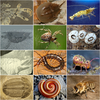

arthropoda

Has synonym(s): arthropod
Definition: Arthropods (, from Ancient Greek ἄρθρον (arthron) 'joint', and πούς (pous) 'foot' (gen. ποδός)) are invertebrate animals with an exoskeleton, a segmented body, and paired jointed appendages. Arthropods form the phylum Arthropoda. They are distinguished by their jointed limbs and cuticle made of chitin, often mineralised with calcium carbonate. The arthropod body plan consists of segments, each with a pair of appendages. Arthropods are bilaterally symmetrical and their body possesses an external skeleton. In order to keep growing, they must go through stages of moulting, a process by which they shed their exoskeleton to reveal a new one. Some species have wings. They are an extremely diverse group, with up to 10 million species.
Source: Wikipedia
Wikipedia Page (Something wrong with this association? Let us know.)
Wikidata Page (Something wrong with this association? Let us know.)